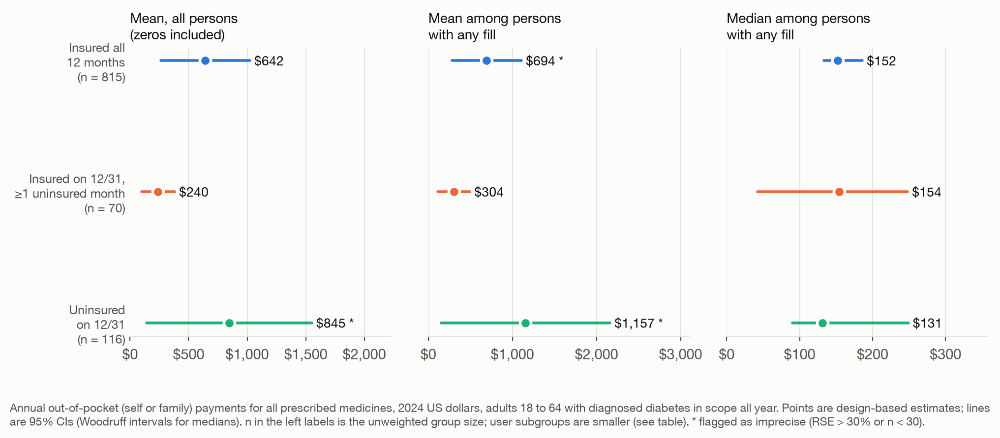

Year-end coverage misses within-year gaps
About one in twelve US adults aged 18 to 64 with diagnosed diabetes who were insured on December 31, 2024, had been uninsured earlier that year. I used the Medical Expenditure Panel Survey to compare their prescription use and spending with those of adults insured all year.

| Class | Weighted % | 95% CI | Unweighted n | Weighted people, millions |
|---|---|---|---|---|
| Insured on 12/31 and in all 12 months | 80.4 | 76.1 to 84.1 | 815 | 13.31 |
| Insured on 12/31 with at least 1 uninsured month | 7.5 | 5.6 to 10.0 | 70 | 1.24 |
| Uninsured on 12/31 | 12.1 | 9.3 to 15.5 | 116 | 2.00 |
| Continuity indeterminate | 0.0 | 0 | 0.00 |
Out-of-scope and missing months are never counted as uninsured
The analysis uses the AHRQ MEPS 2024 Full Year Consolidated file (HC-256, released August 2026), the 2024 Prescribed Medicines file for imputation flags, and the 2023 file for replication. MEPS records coverage on December 31 and, separately, any coverage in each calendar month. The primary domain is the 1,001 adults aged 18 to 64 who reported ever being told they had diabetes and who were in scope for all 12 months, representing 16.6 million people.
Two decisions shaped the results. First, I never counted a month as uninsured if the person was outside the civilian noninstitutionalized population or the month had no usable information; such months make continuity indeterminate unless a gap is observed. In the 2024 domain no month was missing, so the indeterminate class is empty, but the rule matters for anyone applying the classification to other data. Second, I show spending summaries on a common denominator (the same people split by class) and on classification-specific denominators, so differences in who is in scope are not mistaken for coverage effects.
Estimates are design-based (Taylor linearization with the MEPS strata, primary sampling units, and full-year weight), with the whole file kept in the design and domains taken as subsets. Spending was standardized for age, sex, race and ethnicity, and income with a survey-weighted two-part model and jackknife replicate intervals; the model was fit only after a prespecified support rule was met.
People with a gap filled fewer prescriptions, and their median spending was similar

Adults insured on December 31 after a gap filled any prescription less often than the continuously insured (78.8% vs 92.6%) and had fewer fills (20.1 vs 30.4). Their median out-of-pocket spending among users was about the same ($154 vs $152). Their unadjusted mean including zeros was lower ($240 vs $642), a difference partly driven by a few very large amounts among the continuously insured; the top 1% of people accounted for 42% of 2024 out-of-pocket dollars, and without them the means were $240 and $383. Because the gap group is small, the summary for everyone insured on December 31 barely moved, with mean out-of-pocket spending of $608 against $642 for the continuously insured. After adjustment, the difference was −$238 (95% CI, −$536 to $59) in 2024 and $105 (95% CI, −$215 to $425) in 2023, so it was imprecise and changed sign between years.
The estimate is a lower bound and supports description only
- A month counts as covered if any day was covered, so gaps shorter than a calendar month are invisible. The estimate is a lower bound on people with any uninsured day.
- Coverage is self-reported in interview rounds and edited by AHRQ; the year-end and December values come from the same interviews.
- Out-of-pocket spending describes payments made. It is not a measure of affordability or unmet need, and it covers all prescribed medicines, not only diabetes drugs.
- The gap group has 70 respondents, so its subgroup estimates are imprecise, and the means are sensitive to a few very large amounts.
- Uninsured months are counted within 2024, so gaps that began in 2023 are truncated at January.
- Both years overlapped the Medicaid unwinding that followed the end of pandemic-era continuous enrollment on March 31, 2023, so gap rates may differ in other years.
- The design is cross-sectional and descriptive. Nothing here estimates what coverage gaps cause.
How the results were checked
The pipeline reproduces AHRQ's annual uninsured and coverage indicators from the monthly data for every record, matches the codebook's printed weighted frequencies, and, for 2024, matches fill counts and out-of-pocket totals between the prescription and person files. A second implementation of the classification in SQL and a second implementation of the variance formula in Python agree with the main code. Both were written in the same AI-assisted build, so they check the code's consistency rather than validate it externally. All 28 source reconciliation checks and 4 software cross-checks passed. To reproduce:
./setup.sh
./icont all # acquire, build, analyze, validate, render, package
./icont test # unit tests on synthetic fixtures
./icont demo # fast demo on synthetic records (not study evidence)Report, code and data
- Full report, tables and references
- Source code (ZIP): Python, SQL, R, tests, documentation, and result tables (1.1 MB)
- Results workbook with a definitions sheet (Excel, aggregates only) (52 KB)
- Tableau-ready estimates with grain, units, CIs, and suppression flags (CSV) (124 KB)
- Month-to-month coverage transitions (CSV) (8 KB)
- Cohort flow counts (CSV) (2 KB)
- Tableau import and interaction specification (Markdown) (3 KB)
- Source-to-analysis data dictionary (CSV) (18 KB)
- Analysis plan and amendments, self-dated October 7, 2026 (Markdown) (18 KB)
- Related studies and tools (CSV) (16 KB)
- Reported values and source tables (JSON) (208 KB)